ƒекабрь 2007
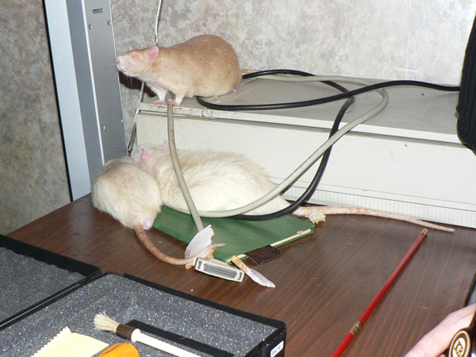
Ёрик: Ч —лушайте все сюда!
≈рофей: Ч Ёй, наверху, спать не мешай!
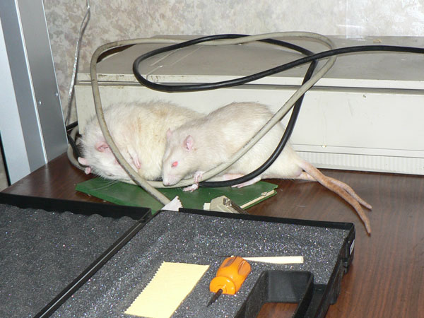
≈рофей: Ч Ќа боку спать, пожалуй, удобнее...
ѕартизан: Ч »нтересно, а от сканнера провода вкусные?
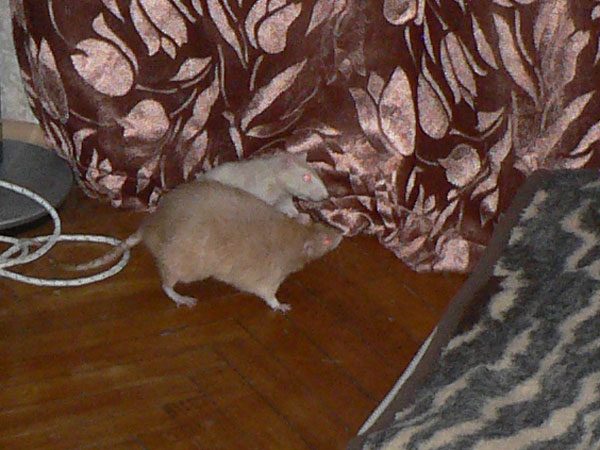
Ёрик и ѕартизан: Ч ј что там, за занавеской?
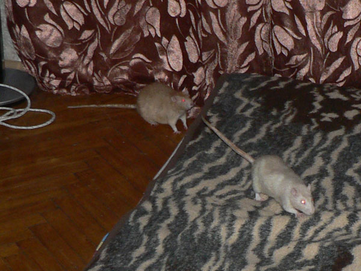
ѕартизан: Ч я вперед на разведку, а ты прикрывай тылы!
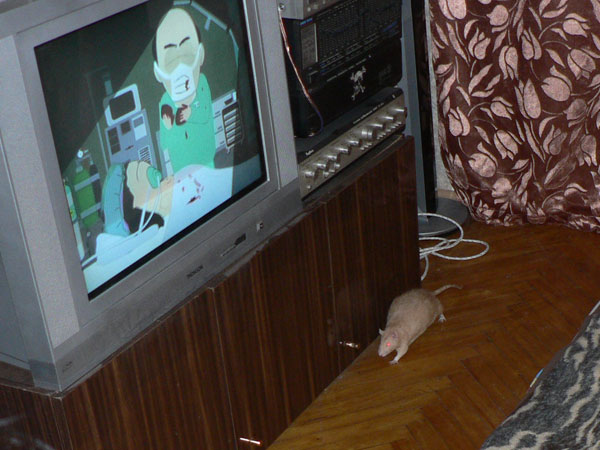
Ёрик: Ч Ќет, € тоже на разведку. јга, "—аут ѕарк" показывают...
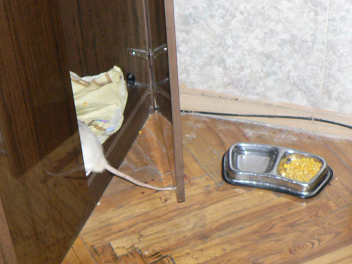
ѕартизан: Ч ј что в шкафу?
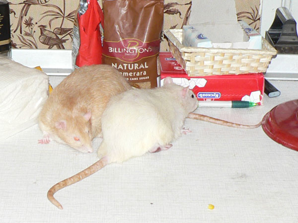
Ёрик: Ч ѕартизан, ты что на сахар нацелилс€? —ахар крысам нельз€.
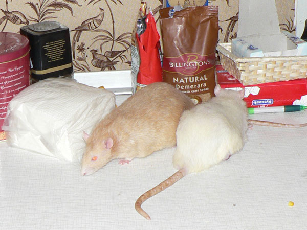
ѕартизан: Ч я его не ем. я на него медитирую.
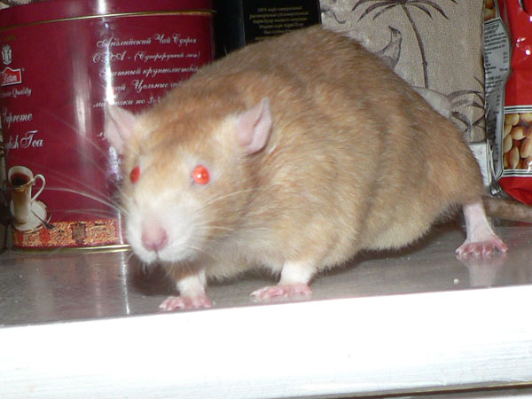
Ёрик: Ч ƒа?
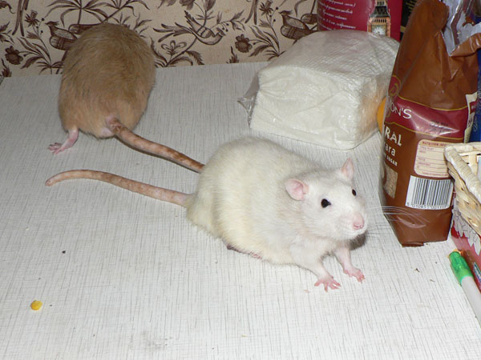
≈нисей: Ч ¬нимательно вас слушаю.
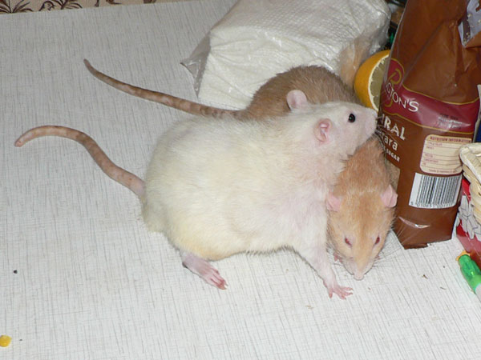
Ёрик: Ч ѕовыкусывал бы мен€, что ли...
ѕартизан: Ч Ќе, € лучше на тебе полежу.
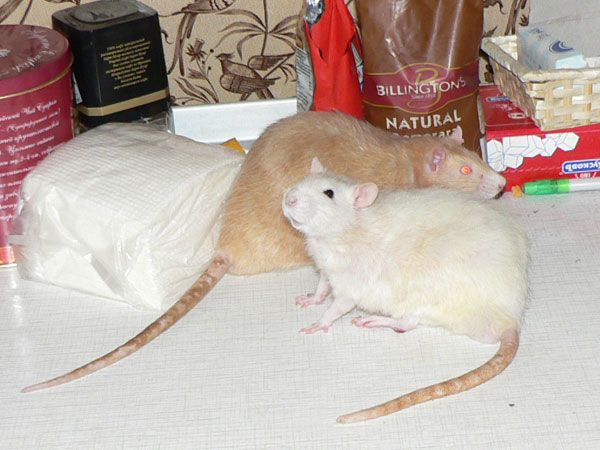
Ёрик и ≈нисейЧ ¬от так мы фотогенично смотримс€?
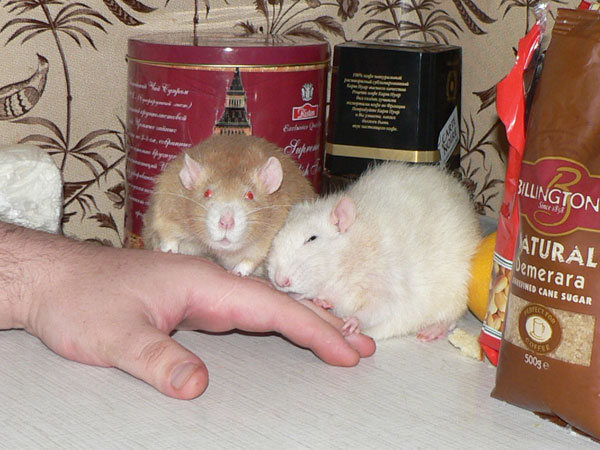
Ёрик: Ч ¬ыкусывать, что ли?
ѕартизан: Ч “ы как хочешь, а € вздремну. » пусть попробует руку убрать!
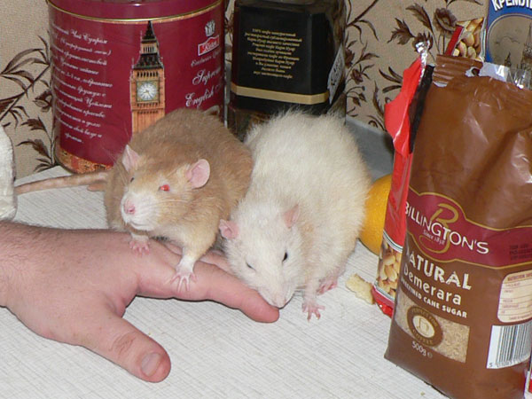
Ёрик: Ч ’оз€ин, ≈нисей что-то обнаглел совсем...
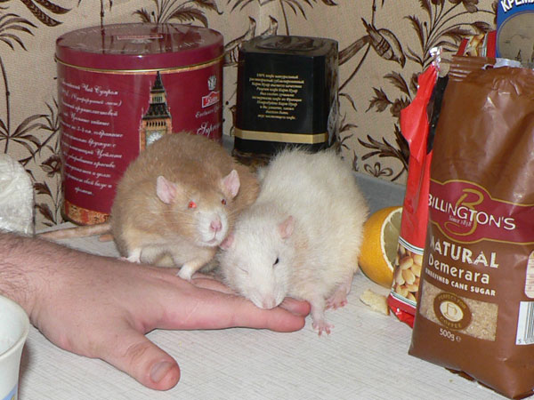
Ёрик: Ч ≈нисей, ну ты ваще обнаглел...
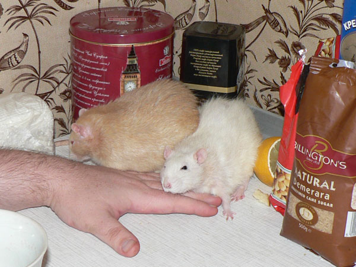
Ёрик: Ч я тут не при чем...
≈нисей: Ч Ќу, € спать укладываюсь.
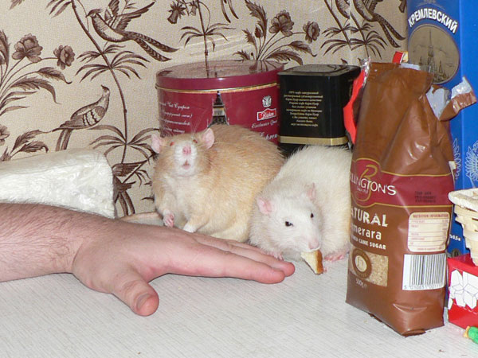
Ёрик: Ч ’оз€ин! —корей убирай руку, пока ≈нисей на жрачку отвлекс€!
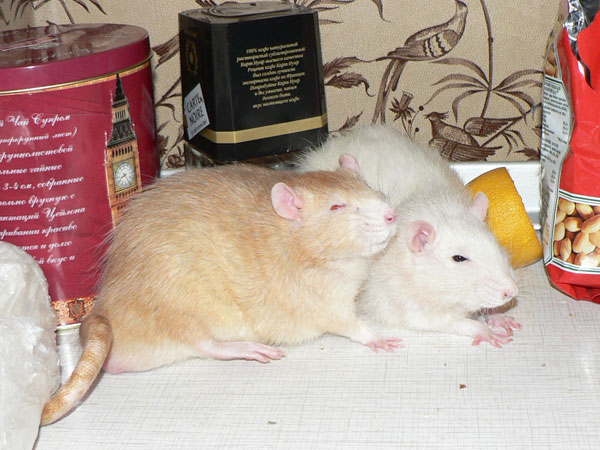
Ёрик: Ч ј, может, ты и прав. ѕоспать бы...
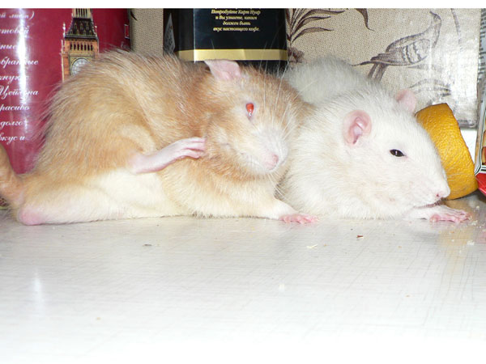
Ёрик: Ч ј честь отдают правой ногой, правильно?
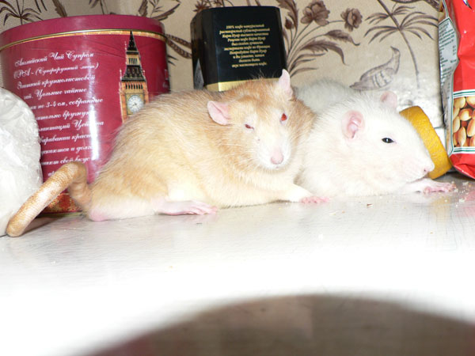
Ч —покойной ночи...
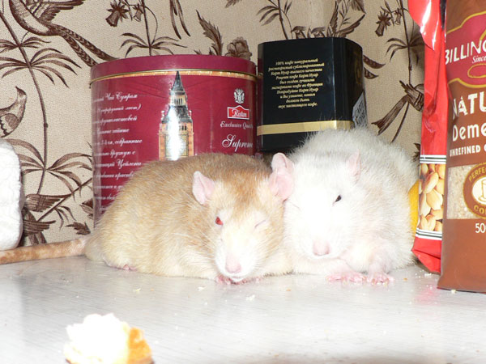
Ч ¬се, уже спим.
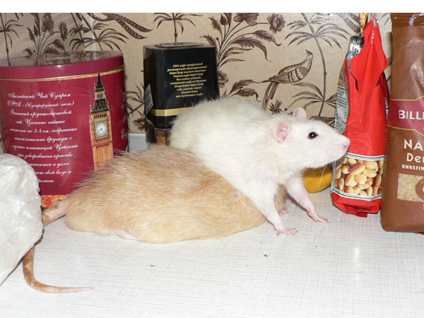
≈нисей: Ч «аснул? “огда поработаешь матрасом...
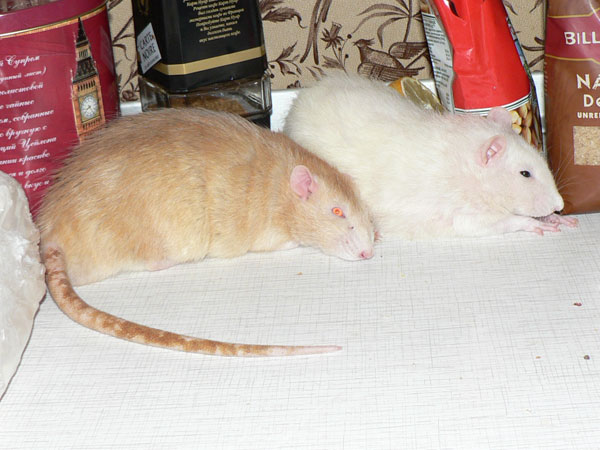
ѕараллельный задрых.
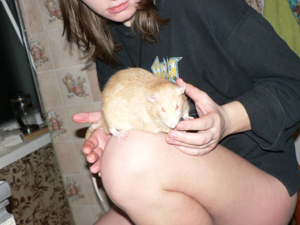
¬от такой в меру упитанный крыс в самом расцвете сил.
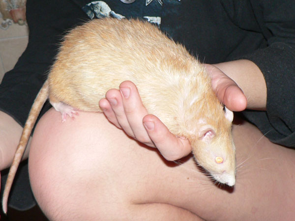
Ёрик крупным планом.